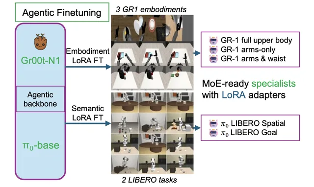
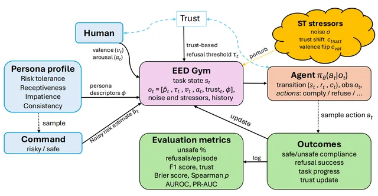
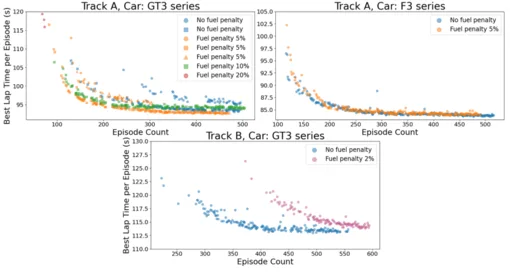
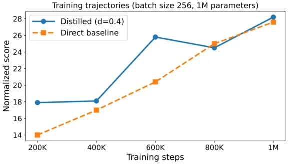
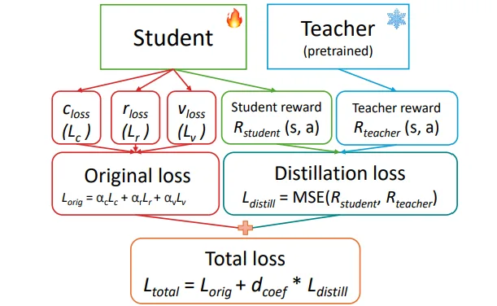
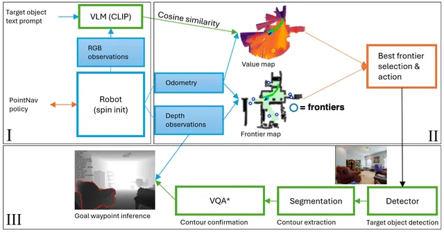
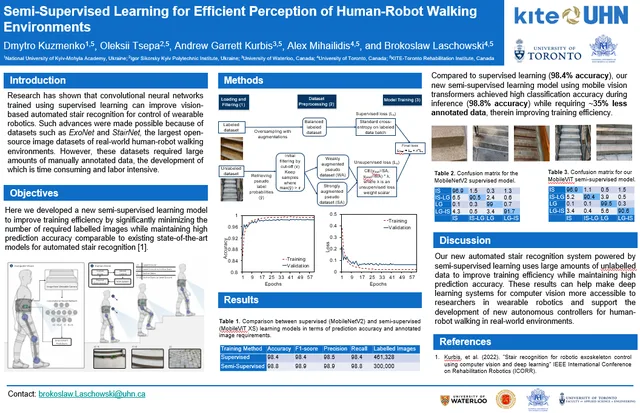
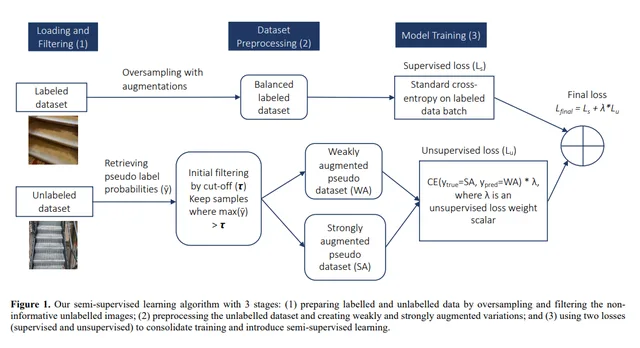

All Publications
Back to home
MoIRA: Modular Instruction Routing Architecture for Multi-Task Robotics
Neurocomputing, 2026

When Robots Say No: The Empathic Ethical Disobedience Benchmark
ACM/IEEE International Conference on Human-Robot Interaction (HRI), 2026

Energy Conservation for Autonomous Agents Using Reinforcement Learning
NaUKMA Research Papers: Computer Science, 2025

TD-MPC-Opt — Distillation & Quantization for Efficient Multi-Task Model-Based RL
Preprint (under review), 2025

Knowledge Transfer in Model-Based Reinforcement Learning Agents for Efficient Multi-Task Learning
International Conference on Autonomous Agents and Multiagent Systems (AAMAS), 2025

Balancing Performance and Efficiency in Zero-Shot Robotic Navigation
ICTERI 2024, Communications in Computer and Information Science (Springer), 2025

StairNet: Visual Recognition of Stairs for Human-Robot Locomotion
BioMedical Engineering OnLine, 2024

Efficient Visual Perception of Human-Robot Walking Environments Using Semi-Supervised Learning
IEEE/RSJ International Conference on Intelligent Robots and Systems (IROS), 2023